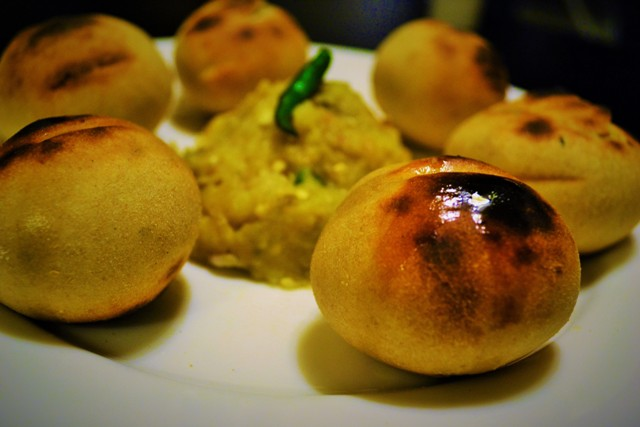

Our Speciality
Litti Chokha
We take pride in serving authentic Bihari
delicacies to our customers. One of our most famous and
beloved dishes is Litti Chokha, a traditional Bihari
dish that has gained popularity all over India and
beyond. At our restaurant, we make Litti Chokha with
the finest and freshest ingredients, following
traditional recipes that have been passed down
through generations.
We take pride in serving this delicacy to our customers, and we guarantee that you will fall in love with its taste and aroma.
So come and visit us, and experience the taste of authentic Bihari cuisine with our signature dish, Litti Chokha. We promise that you won't be disappointed!